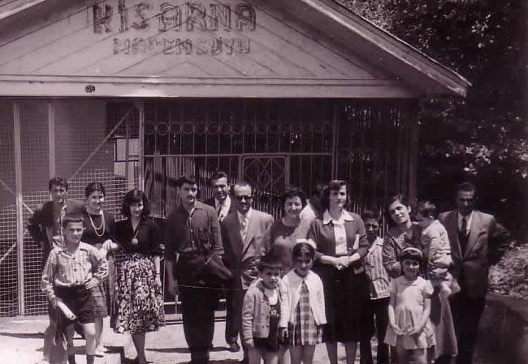

- Bizans dönemi
Kisarna köyündeki kaynağın şifalı suyu bölgede yüzyıllardır biliniyor.
- 1909
Maden suyunun işletmesi 60 yıllığına Miralay Hafız Sabri'ye veriliyor.
- 1918
İşletme hakkı Çulhazade ailesine geçiyor. Kisarna o yıllarda eczanelerde satılıyor.
- 1965
Merhum Temel Eyüpoğlu işletmeyi devralıyor ve Kisarna'yı bugünkü bilinirliğine taşıyor.
- 2001 – bugün
Cemal ve Ahmet (Cemil) Eyüpoğlu kardeşler, babalarının emaneti olan kaynağı aynı özenle yaşatıyor.
